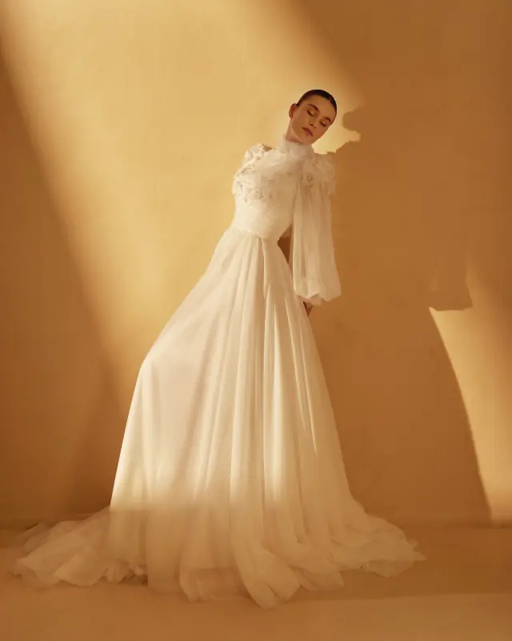
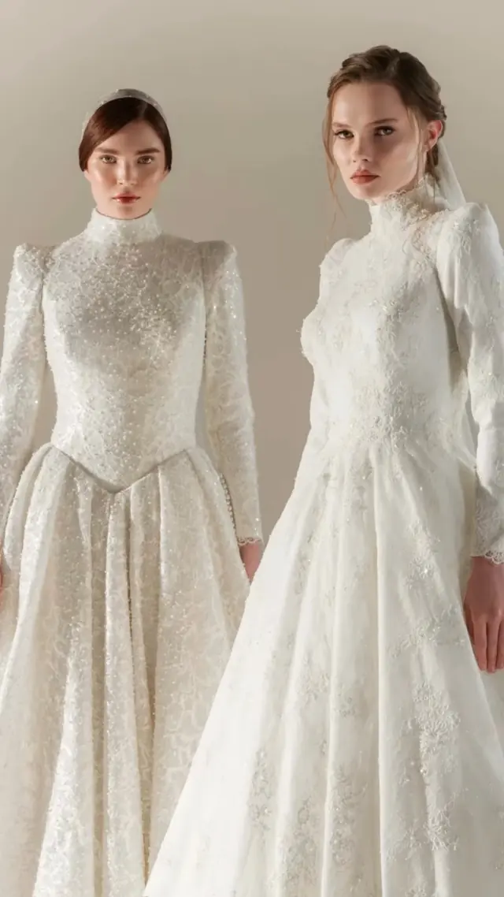
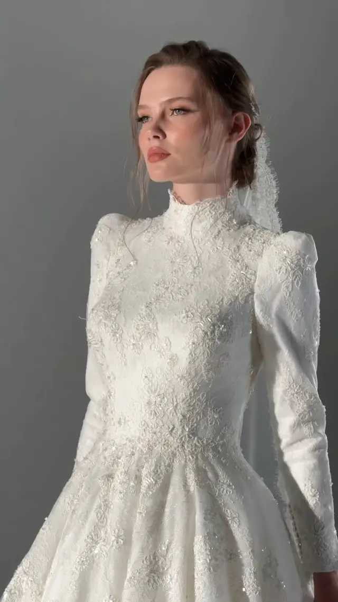
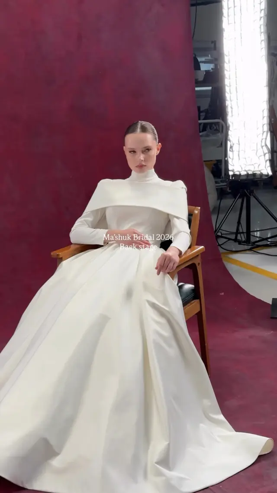

Kapak · Bella
Aşkını bulanlara Maşuk olmak için.
- 12 Kupon dantel: Lavinya'nın hikâyesi
- 20 Şimdi kiralama seçeneğiyle
Bu sayıda
04 · Koleksiyon
Ma'shuk 26
Modest koleksiyonlar da eşsiz olabilir. Kupon danteller, el işçiliği, saten ve kusursuz kalıplar; kapalı kesimden ödün vermeden couture.


Tasarımlar


16 · El işçiliği
Güller elde, tül ipekten.
El yapımı güllerin ipek tülle buluştuğu Bella, klasik kalıpların dışına çıkmak ve en mutlu gününde kendine ait bir imza bırakmak isteyen gelin için tasarlandı. Çünkü en güzel gelinlik, sahibinin ruhunu taşıyandır.
20 · Seçenek
Satın alın ya da kiralayın.
Satın alma
Tasarım size göre prova edilir, gelinlik sizinle kalır.
Kiralama
Aynı couture işçilik, kiralama seçeneğiyle. Tarihinizi erkenden ayırtın.
Fiyat ve koşullar için WhatsApp'tan yazın ya da randevuda konuşalım.
22 · Randevu
Yalnız randevu ile.
- i. WhatsApp'tan yazın, düğün tarihinizi söyleyin.
- ii. Size uygun gün ve saati birlikte seçelim.
- iii. Atölyede tasarımları deneyin, detaylara yakından bakın.
- iv. Satın alma ya da kiralama ile tarihinizi ayırtın.

24 · Atölye
Dragos'ta bir atölye.
Gezi Yolu Sok. No:26Dragos, Kartal, İstanbul